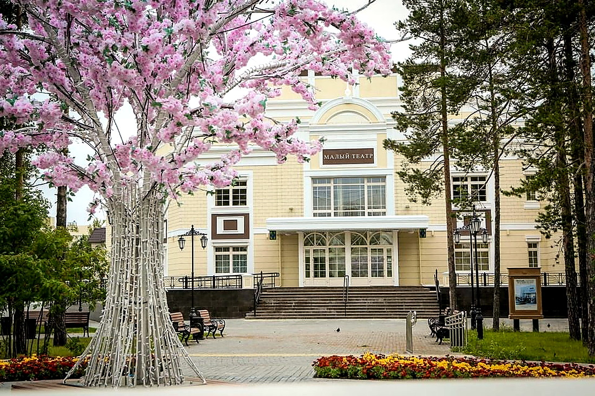
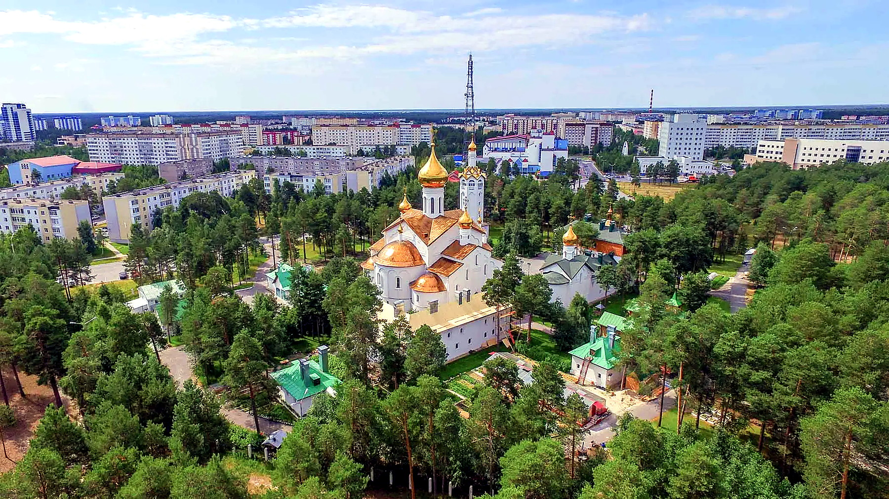

Первые поселки, дороги и рабочая инфраструктура появляются вокруг освоения нефтяных месторождений Западной Сибири.
Достопримечательности Когалыма
Места Когалыма
Город, который читается через места
Когалым — северный город, где промышленная история не спрятана в учебнике, а видна в городских объектах: памятниках первопроходцам, скверах, культурных площадках, храмах, спортивных и семейных местах.
Эта страница собирает не просто адреса, а готовую картину города: куда сходить, что посмотреть, где почувствовать северный характер Когалыма и его связь с нефтяной историей.




История без музейной пыли
Как город нефтяников стал городом маршрутов
Когалым лучше воспринимать не по сухой хронологии, а через места. Одни напоминают о первых строителях и нефтяниках, другие показывают современный город: парки, культурные центры, спортивные объекты и спокойные прогулочные зоны.
Поселковый совет становится управленческим каркасом: растут улицы, жилье, социальные и общественные объекты.
15 августа Когалым официально становится городом окружного подчинения. С этого момента начинается новая городская глава.
За один день можно собрать понятный маршрут: памятник первопроходцам, парк или сквер, культурную площадку, храм, спортивный объект и вечернюю прогулку по освещенному городу.
По этому запросу ничего не найдено.